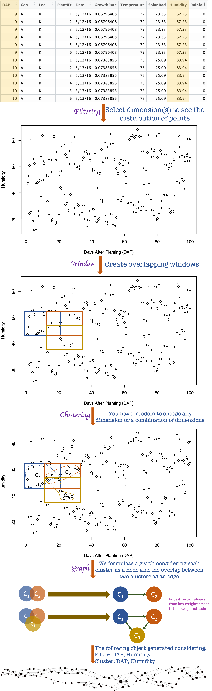
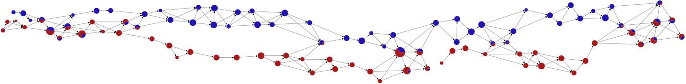

Framework overview
This software library is built to delve the insights of a complex high dimensional dataset. We instantiated the Mapper framework which is based on the algebraic topology in order to represent the structure of a dataset in a graph. The Mapper framework uses three steps named a) Filtering, b) Clustering, and c) Graph generation to convert a high dimensional dataset to a graph. The generated graph is used for visual analytics. Details of our framework is described in our paper. A schematic functional overview of the framework with a sample dataset is given below.

Pie chart
We can represent the category of points in a cluster using a pie chart. In our Hyppo-X framework, we have capability to define a category of a point using single or multiple columns of the dataset. Pie chart shows the percentage distribution of points among all categories.
For instance, for the above sample dataset, we can define the locaion column named Loc as the category of all the points then we will get following graphs. Here, blue color indicates points those belong in location N and red color indicates points those belong in location K. This graph with pie chart node helps us to understand the behavior of points with respect to two locations.
